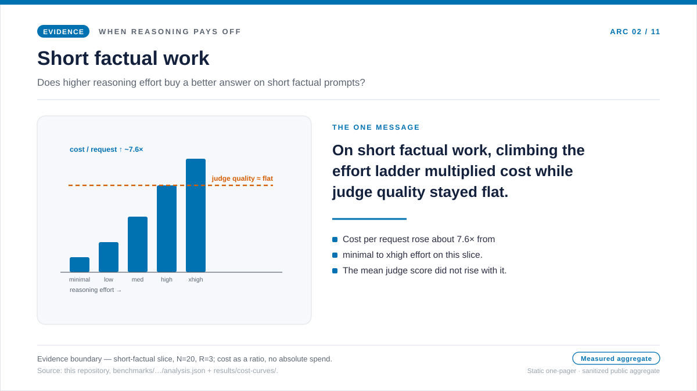

专题文章 · benchmark-01 短事实回答
短事实回答：额外推理买来的只是成本，不是质量
团队刚引入推理模型时，短事实问题最像一个可以放心先调高推理强度的地方。答案短，错了一眼就能看出来；让模型多想一点，听起来像一份便宜保险。所以人们很容易先在这里把推理强度调高。可这种直觉只是值得检验的假设，不是可以直接上线的策略。本文就用数据来检验它。
我们为什么要检验这个
场景很常见：迁移后团队换到推理模型，配置里多了推理强度这个旋钮，而短事实问题看上去最适合把它调高。输出短，错误显眼，“让它多想一点”听起来像一份便宜保险；于是把默认值先在这里调高，几乎会让人觉得不用付代价。
由此就有了一个干净、值得验证的假设：在短事实回答里，更高的推理 强度真的会让答案更稳妥吗？如果会，那么这个偏高的默认值就挣得了 自己的位置；如果不会，团队就是在为一段永远到不了读者面前的思考 付费。
于是我们做了实测。工作负载形态固定为同一组短事实回答任务，再沿着各档推理强度逐一测试；每一档都比较每个请求的成本、延迟、可见回答文本、隐藏推理 token 和评审分数。在这类任务里，结果足以让人重新考虑默认值：推理强度买到了成本、延迟和隐藏 token，却没有买到更好的答案。下面的单页概览把这条信息放在一个画面里，随后各节再补上测量到的细节。

问题
当大部分任务都只要短事实回答时，更高的推理强度能不能把质量改善到足以正当化那张账单？
证据
benchmark-01 的成本、质量、延迟与 token 形态四张图，并配上公开数据表。
发现
在这类任务里，每个请求的成本基本保持平坦 — 从 none 到 xhigh 约 1.02x，所有 gpt-5.2 档位都低于 gpt-4o 基线 — 平均评审分数数保持在 1.95 左右。
结论
把已经能答对的最低推理强度设为默认。只有当评审者在这种工作负载形态上真正显示出质量的上行时，才往上调。
数据显示了什么
假设预言：更高的推理强度会带来更稳妥的答案。数据没有兑现这一点。 成本柱基本保持平坦 — none effort 下 $0.000587，xhigh 下 $0.000598，跨度约 1.02x，且所有 gpt-5.2 档位都低于 gpt-4o 基线 $0.000665 — 质量柱同样平坦：平均评审分数在整条阶梯上约为 1.95， 达到或高于基线的 1.90。延迟也没有趋势（没有爬升，大约在 1.4s 到 1.7s 之间），token 形态的吞吐量系数保持在 0.99 左右。
所以成本柱和质量柱都没有随着推理强度移动。这就是这张图想讲的全部故事。多花在推理上的钱，既没有换来更低的账单，也没有换来更好的答案；最低设置的 gpt-5.2 已经追平或超过了 gpt-4o 基线。在这种工作负载形态下，更高的推理强度不该成为默认，而应留在“实验性”的位置上。
这个假设为什么会落空
看上去稳妥的默认值之所以会让人失望，是因为短事实回答很少需要漫长的 内部探索。当答案就是一个单一事实时，瓶颈往往在检索、稳定的提示词， 或者干脆是那个已经能答对的最低推理强度设置，而不在额外的斟酌。越过 那个点之后，再多想也没有什么可找的了，各档推理强度只会继续往上堆隐藏 token，却不再增加准确度。
这正是这类任务呈现出的形状。评审分数没有随推理强度上升，而是保持在 1.95 左右；成本、延迟和推理 token 也基本保持平坦。这里几乎没有需要付费的隐藏思考。也正因如此，在这类任务上提高默认值，买不到更便宜设置尚未交付的任何东西。
这张图该怎么读
这些柱子是聚合柱状图，而不是频次直方图。每根柱子代表 benchmark-01 的 一个推理强度配置，所以这是在比较"同一种工作负载形态，随着推理强度 上升会如何变化"。
X 轴
柱子沿推理强度档位从左到右排开——baseline、none、low、 medium、high、xhigh。把它当成运维者可以调节的那个控制项。
Y 轴
在成本图里，柱高表示每个请求的平均 USD；在质量图里，柱高表示平均 评审分数。两者要成对地读，而不是分开看。
柱子与表格
每根柱子都是一个聚合配置。图下方的表给出精确值、可得时的标准差， 以及样本数。误差棒是标准差，不是置信区间。
docs/blog/data/chart-data/cost-curves-effort/benchmark-01/cost-per-request.json，
请与证据仪表盘
（分发的图表数据）并排阅读。

docs/blog/data/chart-data/cost-curves-effort/benchmark-01/quality.json，
请在证据仪表盘
（分发的图表数据）里
与成本图配对阅读。

每张源图各自贡献了什么
每张源图回答决策中不同的一部分。成本图说明这个设置需要付出什么；质量图 说明这笔花费有没有换来更好的答案；延迟与 token 构成解释了运维上的副作用； 吞吐量视角则把同一种 token 形态翻译成容量规划上的压力。
| 源图 | 读法 | 观测到的模式 | 对决策的含义 |
|---|---|---|---|
| 每个请求的成本 | X 轴是 effort 档位，Y 轴是每个请求的平均 USD。 | none effort 下 $0.000587；xhigh effort 下 $0.000598；基线 $0.000665。 | 账单保持平坦且低于基线，所以更高 effort 没有什么要证明。 |
| 质量护栏 | X 轴是同一组推理强度档位，Y 轴是平均评审分数。 | none effort 下 1.95；xhigh effort 下 1.95；基线 1.90。 | 质量是平坦的，而且已经达到或高于基线。 |
| 延迟 | X 轴是推理强度档位，Y 轴是平均响应延迟。 | none effort 下约 1.7s；xhigh effort 下约 1.4s，整条阶梯没有趋势。 | 延迟是 noisy 的，不是 effort 的成本。 |
| token 构成 | X 轴是推理强度档位，Y 轴是每个请求的平均 token。 | 推理 token 保持接近零（none 为 0，high 约 1.35）；可见输出只从约 14.0 变到 14.8 个 token。 | 这类任务几乎没有隐藏的可计费增长。 |
| token 形态的吞吐量 | X 轴是推理强度档位，Y 轴是相对基线的吞吐量系数。 | 系数从 none 到 xhigh 保持在 0.99 左右。 | 这种流量形态不需要额外容量余量。 |
发生了什么
成本曲线保持平坦。none effort 平均每个请求 $0.000587，xhigh effort 平均每个请求 $0.000598，跨度约 1.02x；所有 gpt-5.2 档位都低于 gpt-4o 基线 $0.000665。配对的质量也保持平坦：平均评审分数数保持在 1.95 左右，达到或高于基线的 1.90。
这不是“推理不好”的普遍主张，而是关于工作负载形态的主张。在这类任务 里，几乎没有额外的内部计算需要付费；调高 effort 既没有买来更低账单， 也没有买来更好的答案。仪表盘把成本与质量并排放着，于是这一点看得见。
最要命的陷阱是相反的直觉：更高 effort 一定更安全。如果评审者只抽看几个答案， xhigh effort 会让人觉得模型想得更卖力，因而感觉更稳妥。这张图正是 要拦住这种直觉变成策略：它显示质量差异是平坦的，所以更便宜的设置能在没有 更慢或更大账单的情况下保持同样答案。
做基准测试时我们学到的
"多想一点"不是默认
推理强度是一种处置：把它放到某类任务上，测量它，只有当评审者真的 动了，才把强度调高。把它当成全局默认值，就会把账单一直藏到生产流量 到来为止。
成本要和质量成对看
只看成本的图会让变化显得明显却不完整；只看质量的图又会把经济成本 藏起来。真正有用的视角是成对的：多花的成本换来了什么，它有没有改善答案。
短事实回答需要一条低推理强度基线
可接受的最低推理强度档位，就是要去超越的那条基线。如果更高的档位 在质量上没能超过它，运维者就该保持更便宜的设置，把优化时间花到 别处。
什么时候该重新审视这个决定
不要把这个结论永久冻结。当任务从简单回忆变成综合，当评分标准开始奖励 多步论证，当提示词开始携带工具的输出，或者当一个新模型改变了成本与 质量的形状时——就重新检验。教训不是"永远别用推理"，而是"没有配对的 证据，就别把推理强度继续调高。"
一个有用的复测，是保持同一条 X 轴、换掉工作负载类型。短事实回答、多步、 工具代理、综合类任务，各自都应当挣得属于自己的推理强度设置。正是这条 路由策略，才是推理通常真正值回成本的地方。
来源与证据边界
上面所有数字都能追溯到本仓库的公开产物，所有成本数字都按带日期的定价 快照算出。“在这类任务里更高的推理强度应保留为实验性”这一运维解读， 是本文自己的判断。下面两个 Tier 标明了：有文档记载的输入到哪里为止， 推断又从哪里开始。
- [1] Tier 1 — 方法论契约：本仓库，
docs/05-methodology.md（v1.0）。每个组合 N = 20 个人工编写样本、R = 3 次重复、仅取公开聚合结果。图表解读正文都立足于这组冻结前提；误差棒是标准差而非置信区间，在 N = 20 下不主张 p 值。 - [2] Tier 1 — PAYG 定价快照：每个请求的成本（none effort 的 $0.000587、xhigh effort 的 $0.000598，二者都低于 $0.000665 基线）按本仓库的
pricing/azure-openai-payg-2026-05.yaml算出。访问于 2026-05-19：Azure OpenAI 定价页；存档。标价一动，数字也随之变化。 - [3] Tier 2 — 短事实回答任务的测量：本仓库，
benchmarks/01-short-factual/analysis.json。它是平坦的每请求成本、约 1.95 的平均评审分数（gpt-4o 基线 1.9）、约 1409 ms 到 1713 ms 之间无趋势延迟，以及吞吐量系数保持接近 0.99 的来源。 - [4] Tier 2 — 渲染后的图表数据：本仓库，
docs/blog/data/chart-data/cost-curves-effort/benchmark-01/（cost-per-request.json、quality.json、latency.json、throughput-gain.json）与docs/blog/data/chart-data/token-composition/benchmark-01/tokens.json。它是推理 token 接近零（none 为 0.0，high 为 1.35），可见输出只从约 14.0 移到 14.8 个 token 的来源。 - [5] 证据仪表盘：证据仪表盘里逐配置的表与渲染后的源图，是审计同一批产物的可核查形态。
这组测量证明了什么、又没证明什么：它表明，在短事实回答这种工作负载 形态下，在一个租户、一个区域、这份定价快照之下，各档推理强度买到了 成本和隐藏 token，却没带来相称的质量上行。它并不证明同样的形状会在 综合、多步、用工具的工作中成立，也不证明它会在未来的定价快照下成立。
实用准则
实用准则：短事实回答应保持在已经能答对的最低推理强度上， 只有当质量门槛在这种工作负载形态上真的动了之后，才往更高的推理强度 提——而且要与配对的成本、延迟、token 构成图并排着读。
证据仪表盘，就是这条准则背后的审计轨迹。
下一篇： 不可见的推理 token：那笔不出现在答案里的账单 — 如果回答文本依旧很短，多出来的成本到底从哪儿来？